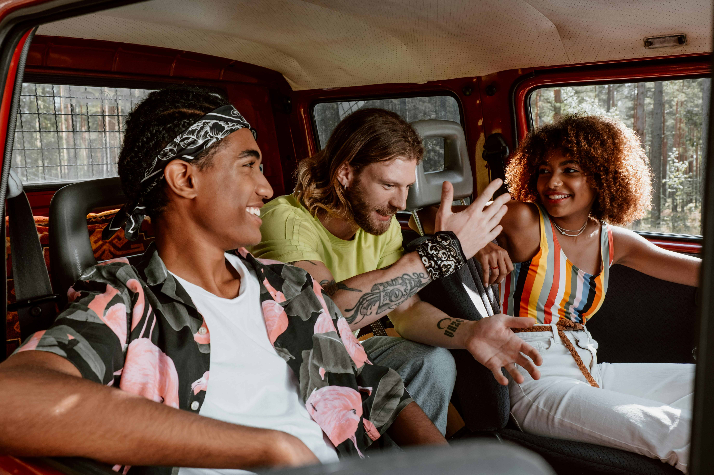

Qui Sommes-nous ?
EcoRide est une jeune entreprise innovante dédiée à la réduction de l'empreinte écologique dans le secteur des transports. Notre mission principale est de promouvoir une mobilité durable à travers des solutions de covoiturage adaptées aux besoins des particuliers et des professionnels.
